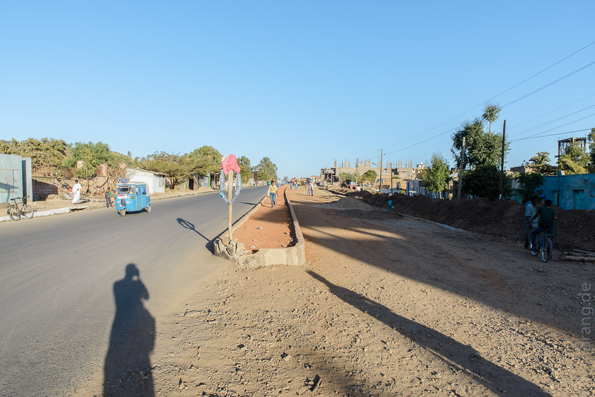
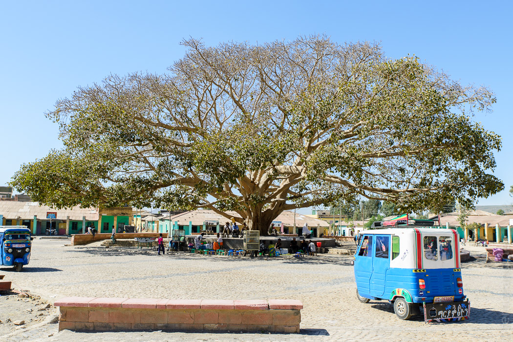
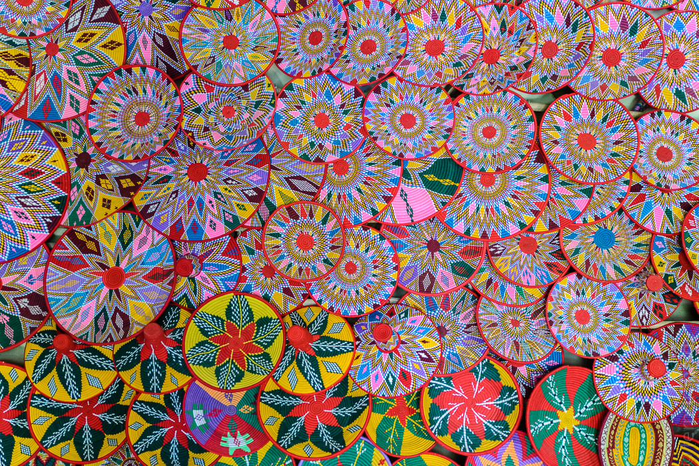
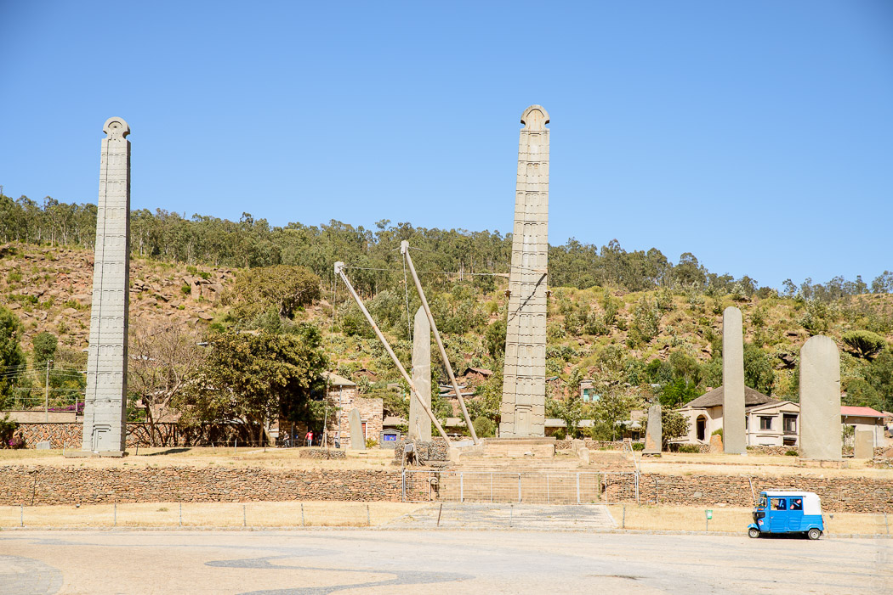
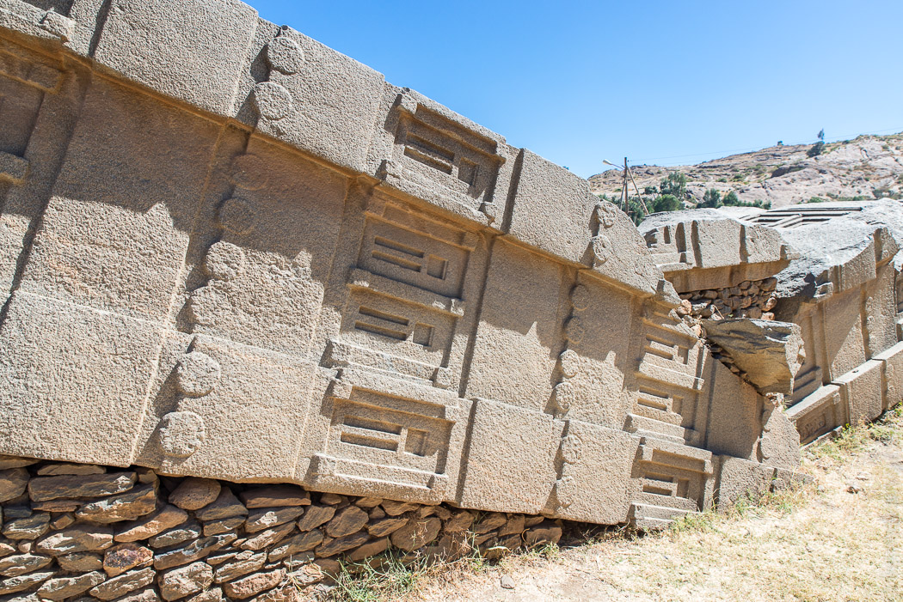
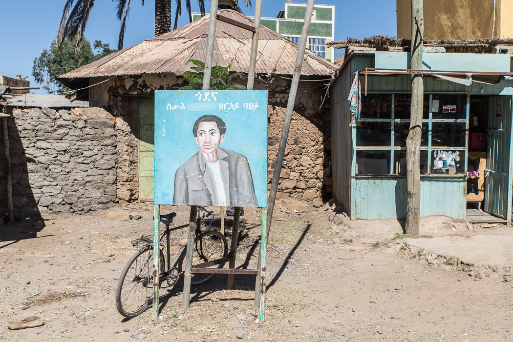

Ausgeschlafen, heiß geduscht und einigermaßen erholt laufen wir durch Aksum. Die Hauptstraße ist im Bereich von unserem "Hotel Brana" noch eine große Baustelle. Aber weiter ins Zentrum wird es netter. Überall einfache Cafés und Büdchen. Die Seitenstraßen sind mühsam in schönen Fächermustern gepflastert, die dahinter liegenden Straßen zwar noch irre breit, doch nur noch Sandpisten. Das Tourist Office, wo man Tickets für die Stelenfelder kaufen muss, ist riesengroß und leer. Unzählige Sessel stehen herum, alle noch mit Schutzfolie - so bleibt es länger schön.

Die Piazza hat zwar einen tollen, großen Baum in der Mitte, ist ansonsten aber nur ein staubiger Platz, der kaum als Zentrum herhalten kann. Hier fangen langsam die Souvenir-Läden an. Vom Platz vor der neuen Marienkirche kann man die Stelen schon sehen.


Wir wurden bisher überall auf der Welt von Sehenswürdigkeiten, die sich Stelen nennen, enttäuscht. Aksum war nur als Zwischenstopp auf dem Weg gedacht. Um so überraschter sind wir, dass diese Stelen nicht äußerst langweilig sind. Die Säulen sind über 20m hoch und aus einem einzigen Stein gehauen. Sie sind wie Hochhäuser gestaltet, man vermutet jemenitische Vorbilder. Unten ist eine stilisierte Tür und dann folgen zig Stockwerke mit Fenstern und Stützbalken. Die Stelen sind vermutlich aus dem 4. Jahrhundert und dafür sowohl sehr akkurat gehauen als auch ziemlich gut in Schuss. Mit einer 33m hohen und viel dickeren Stele wollten sich die Erbauer selbst übertreffen. Leider ging das in die Hose. Heute liegt das Monster in drei Teile zerbrochen quer in der Anlage.


In der großen Kirche gegenüber wird ein Marienfest gefeiert. Die stundenlange Messe wird mit Lautsprechern nach außen übertragen, so dass auch Abwesende in den Genuss des grässlichen Gesangs des Priesters kommen. Die Esel, die sich auf dem hässlichen Platz davor die Beine in den Bauch stehen, scheinen völlig unbeeindruckt. Einen Block weiter an der Piazza haben sich die Muslime zum Freitagsgebet versammelt. Es gibt offenbar keine Moschee (vielleicht weil Aksum den Christen hier so heilig ist?), so dass kurzerhand eine ganze Straße mit Teppichen ausgelegt und von Betenden blockiert wird. Ein Megaphon ersetzt die Kanzel.
Angeblich soll die Königin von Sabah hier residiert haben, äthiopische Könige sowieso. Im Stadtbild sieht man davon überhaupt nichts. Generell gibt es in der Stadtgeschichte zu viele Mythen und Vermutungen um sich irgendetwas sicher zu sein. Wir sind zu faul für weitere Besichtigungen. Den Rest des Tages lümmeln wir in Cafés und Saftbars herum, die während der ständigen Stromausfälle von Smoothies auf Obstsalat umsatteln.
